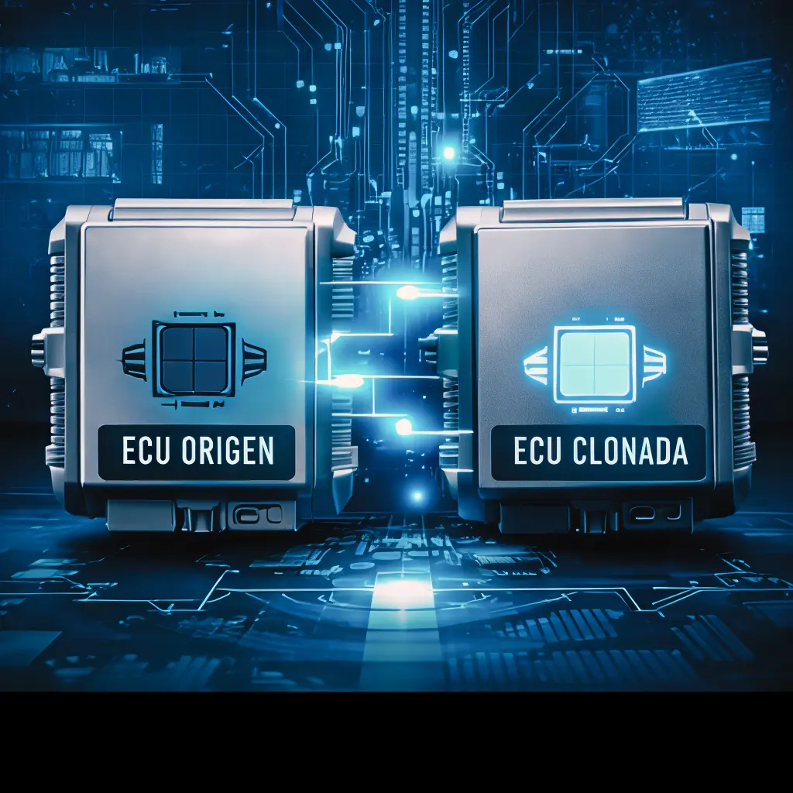
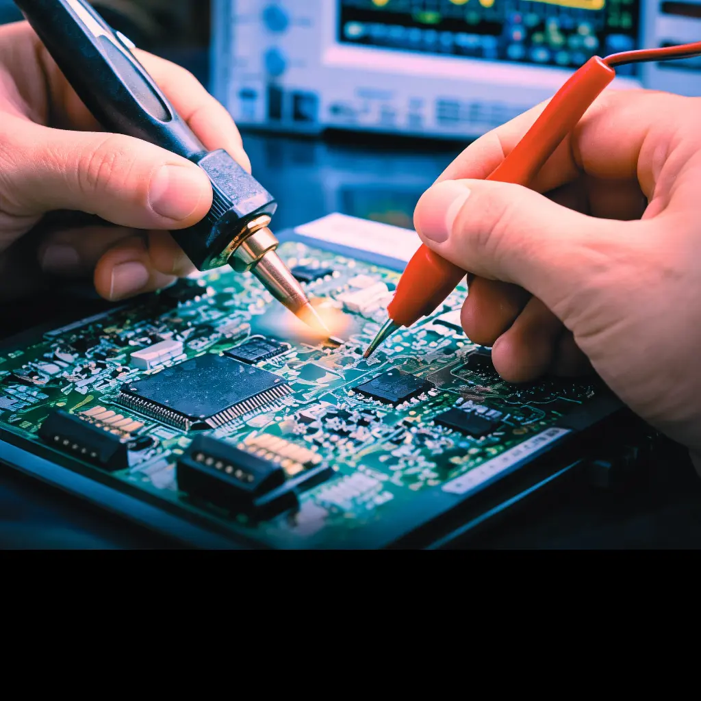
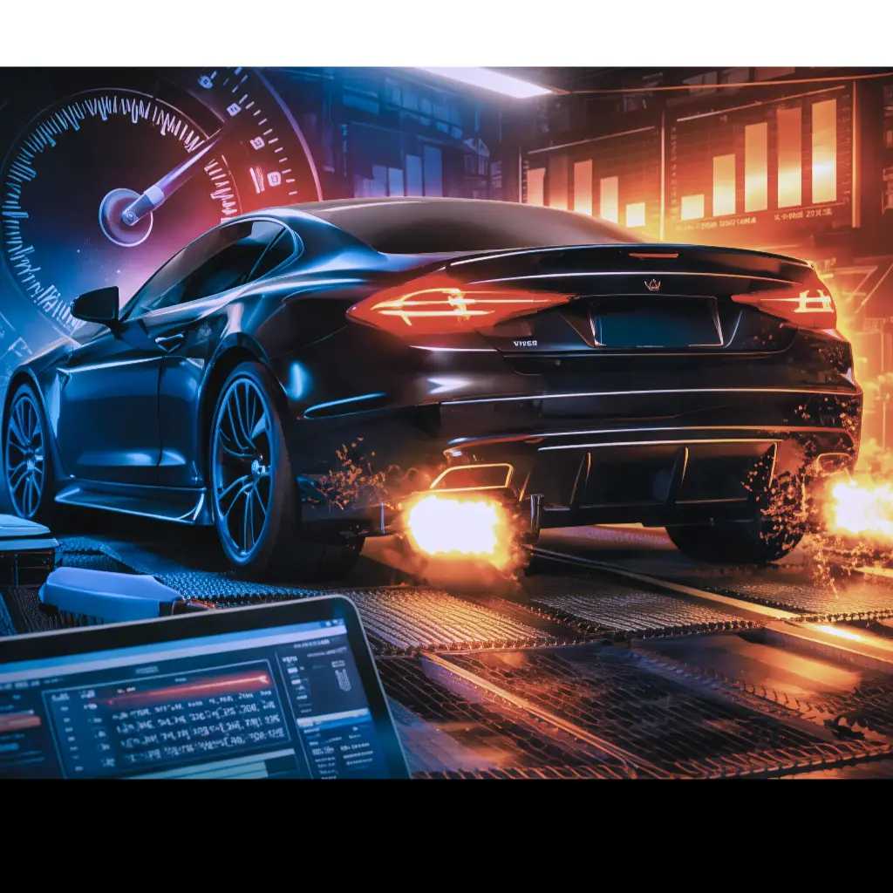

Transferencia completa de datos para reemplazo seguro y totalmente funcional.

Diagnóstico interno y reparación de fallas en centralitas y cuadros automotrices.

Optimización y ajustes personalizados del software de inyección electrónica.
"Respuesta rápida, tuve un problema con la bsi y me lo solucionaron. Da gusto encontrar gente tan profesional"
"muy buena gente, servicio rápido e eficiente, me ha solucionado muchos fallos de averia que tenia en mi coche. recomiendo"
"Trabaja regularmente para nuestro taller, le derivamos problemas con ecu, egr, dpf, adblue... Responde en el mismo día y sin problemas."
"Taller de total confianza y Sergio es un artista. Muy recomendable."
"El mejor de Valencia. Nadie sabia arreglarme la radio de mi peugeot 3008. Todos querian cambiarme todo el aparato. Gracias Sergio. Eres un crack."
"Muy buen profesional, arreglo la avería rápido y el coche va perfecto, 100% recomendable."
Contáctanos ahora y recibe asesoramiento técnico inmediato.
Hablar por WhatsApp